In the right hand top corner is a textual display of the current simulation
time  , and the current (adaptive) difference between iterations
, and the current (adaptive) difference between iterations
 .
.
 embeds a reference to the simulation
time on the Canvas. This is not necessary in most simulations, but
can be useful if you want to make a time-dependent process explicit,
or control the appearance of a graph.
embeds a reference to the simulation
time on the Canvas. This is not necessary in most simulations, but
can be useful if you want to make a time-dependent process explicit,
or control the appearance of a graph.
For example, by default a graph displays the simulation time on the horizontal axis, so that cycles get compressed as a simulation runs for a substantial period: 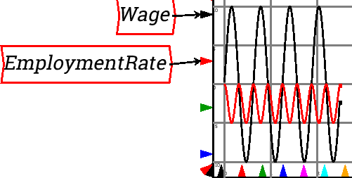
If a Time block is added to the marker for the x-axis range, you can control the number of years that are displayed. This graph is set up to show a ten year range of the model only: 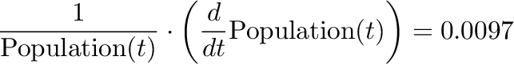
 . This is the fundamental
element of Minsky that is not found (yet) in any other system
dynamics program.
. This is the fundamental
element of Minsky that is not found (yet) in any other system
dynamics program.
Clicking on it and placing the resulting Bank Icon on the Canvas enters a Godley table into your model: 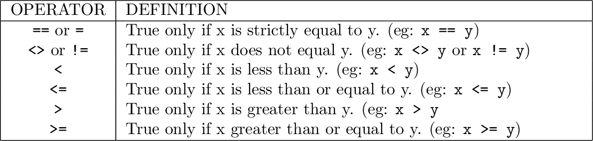
Double-click on the Bank Icon (or right-click and choose ``Open Godley Table'' from the context menu) and you get a double-entry bookkeeping table we call a Godley Table, which looks like the following onscreen:
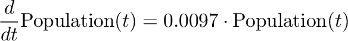
Use this table to enter the bank accounts and financial flows in your model. We discuss this later.
 . This inserts
a variable whose value depends on the integral of other variables
in the system. This is the essential element for defining a dynamic
model. Click on it and the following entity will appear at the top
left hand side of the canvas (and move with your mouse until you click
to place it somewhere:
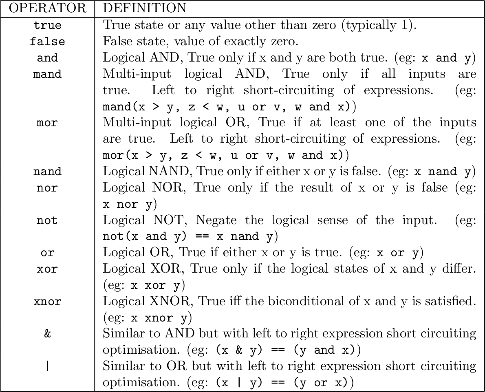
. This inserts
a variable whose value depends on the integral of other variables
in the system. This is the essential element for defining a dynamic
model. Click on it and the following entity will appear at the top
left hand side of the canvas (and move with your mouse until you click
to place it somewhere:
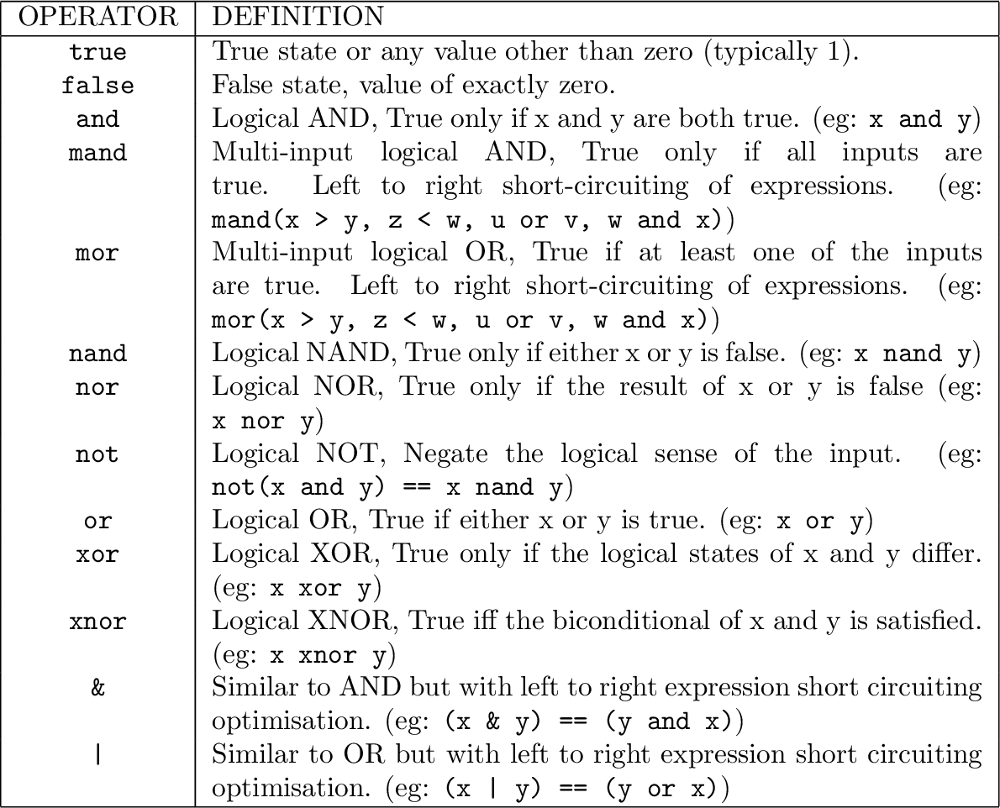
``int1'' is just a placeholder for the integration variable, and the first thing you should do after creating one is give it a name. Double-click on the ``int1'', or right click and choose Edit. This will bring up the following menu:
Change the name to something appropriate, and give it an initial value. For example, if you were building a model that included America's population, you would enter the following:
The integrated variable block would now look like this: 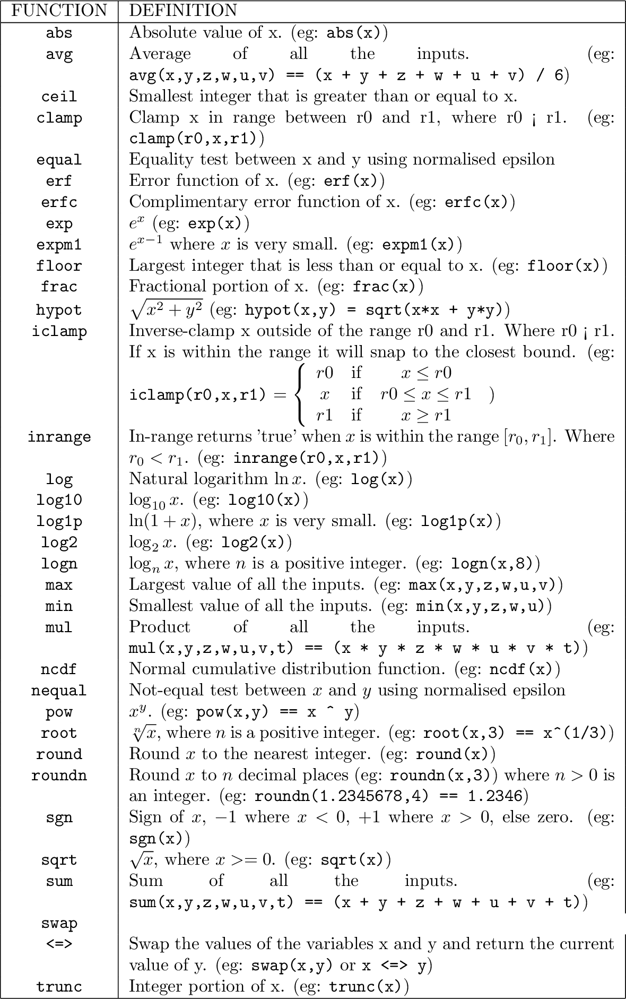
To model population, you need to include a growth rate. According to Wikipedia, the current US population growth rate is 0.97 percent per annum. Expressed as an equation, this says that the annual change in population, divided by its current level, equals 0.0097:
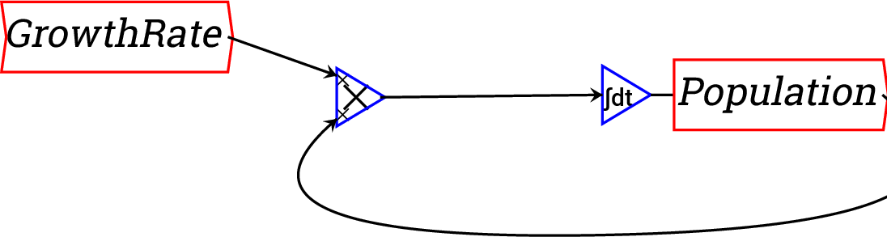
To express this as an integral equation, firstly we multiply both sides of this equation by Population to get:
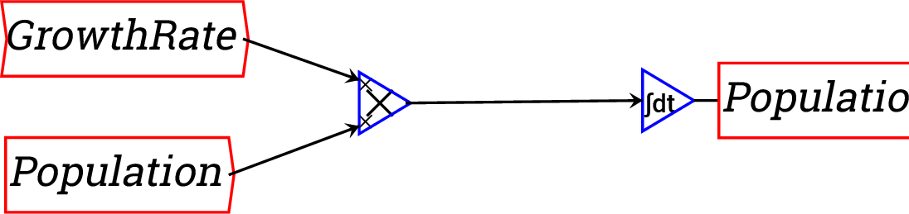
Then we integrate both sides to get an equation that estimates what the population will be T years into the future as:
Here, 315 (million) equals the current population of the USA, the
year zero is today, and  is some number of years from today. The
same equation done as a block diagram looks like this:
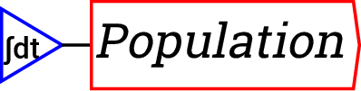
is some number of years from today. The
same equation done as a block diagram looks like this:
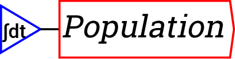
Or you can make it look more like the mathematical equation by right-clicking on ``Population'' and choosing ``Copy item''. This creates a copy of the Population variable, enabling you to wire up the equation this way: 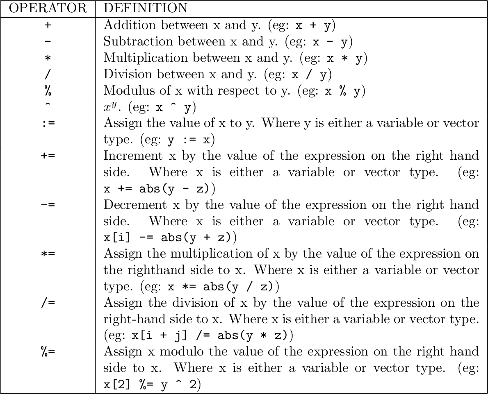
 This operator
symbolically differentiates its input, provided the input is differentiable.
An error is generated if the input is not differentiable.
This operator
symbolically differentiates its input, provided the input is differentiable.
An error is generated if the input is not differentiable.